HDD Navigation System Function Description |
If the symptom corresponds to any of the following, it is intended operation and not a malfunction.
| Symptom | Answer |
|---|---|
| A longer route than expected is selected. | Depending on road conditions, the navigation ECU may determine that a longer route is faster. |
| The shortest route is not displayed even when distance is given priority. | For safety reasons, some roads may not be used. |
| Immediately after the engine is started, the navigation system deviates from the actual position while the vehicle is moving. | If the vehicle starts moving before the navigation system starts up, the system may not respond. |
| When driving on certain roads, especially new roads, the vehicle position deviates from the actual position. | When the vehicle is driving on a new road not covered by the map disc, the system tries to match the position to another nearby road, causing the position mark to deviate. |
The following symptoms are not malfunctions, but are caused by errors inherent to the GPS, gyro sensor, speed sensor and navigation ECU.
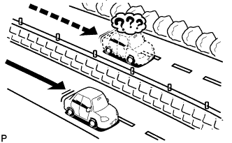 |
The current position mark may be displayed on a nearby parallel road.
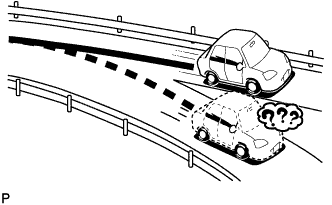 |
Immediately after a fork in the road, the current vehicle position mark is displayed in a different position.
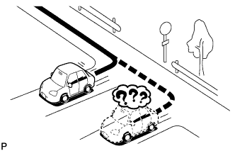 |
When the vehicle turns right or left at an intersection, the current vehicle position mark may be displayed on a nearby parallel road.
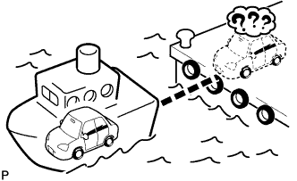 |
When the vehicle is being transported by ferry, etc. or the vehicle itself is not moving, the current vehicle position mark is displayed at the position last measured by GPS.
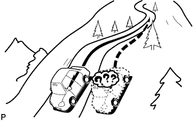 |
When the vehicle is driving on a steep slope, the current vehicle position mark deviates from the correct position.
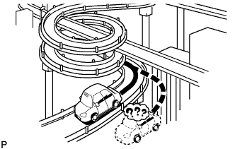 |
When the vehicle makes continuous turns of 360°, 720° or 1080°, the current vehicle position mark may deviate from the correct position.
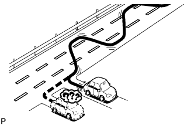 |
When the vehicle moves irregularly, such as constantly changing lanes, the current vehicle position mark may deviate from the correct position.
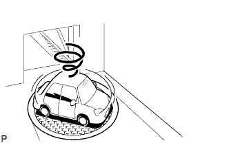 |
When the IG is turned ON or ACC is turned ON while parked on a turntable, the current vehicle position mark may not indicate the correct position. The same thing occurs when leaving a parking lot.
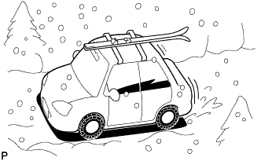 |
When the vehicle is driving on snowy or mountain roads with tire chains installed or with a spare tire in use, the current vehicle position mark deviates from the correct position.
When a tire is replaced, the current vehicle position mark deviates from the correct position.
The radio frequency bands used for radio broadcasting are as follows.
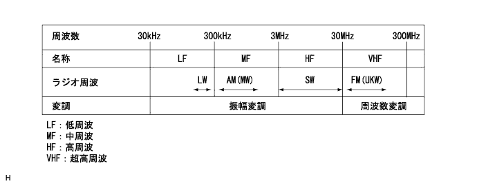
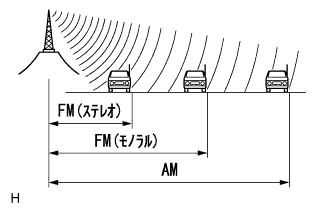 |
There is a considerable difference in the size of the service areas for AM and FM monaural, and even if AM can be received clearly, FM stereo broadcasts may not be receivable. In addition, FM stereo not only has the smallest service area, but is also susceptible to static and other interference ("fading noise", "multipath noise", "fade out").
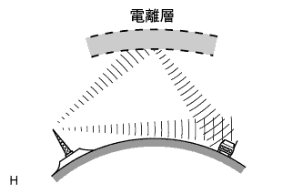 |
Fading Noise
In addition to electrical interference, AM broadcasts are susceptible to other interference, especially at night. This occurs because AM radio waves are reflected by the ionosphere at night, and the reflected waves interfere with the waves from the same station that reach the vehicle antenna directly. The noise generated by this interference is called "fading noise".
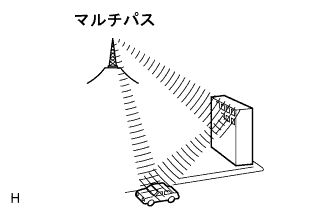 |
Multipath Noise
Interference caused by radio waves reflecting off obstacles is called "multipath". Multipath occurs when a signal sent from the broadcast station antenna is reflected by buildings or mountains and interferes with the signal that is received directly. The noise generated by this interference is called "multipath noise".
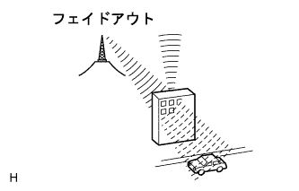 |
Fade Out
Because FM radio waves have a higher frequency than AM radio waves, they are reflected by obstacles such as buildings and mountains. For this reason, when the vehicle goes behind buildings or other obstacles, the FM signal gradually fades or weakens. This phenomenon is called "fade out".
Questionnaire for Noise
When troubleshooting noise, it is very important to fully understand the customer's complaint. Therefore, use the questionnaire below to accurately diagnose the problem.
| Broadcast Method | Inquiry Details | Probable Cause |
|---|---|---|
| AM | Noise occurs in specific places. | External noise is highly likely. |
| AM | Noise occurs when listening to a broadcast that is difficult to hear. | The same program may be broadcast from different local stations, and if the program is the same, the customer may be listening to a different station. This mistake occurs often, especially with NHK. |
| AM | Noise occurs at night. | Beating of radio waves from distant stations is highly likely. |
| FM | Noise occurs at specific places while driving. | Multipath noise and fading noise caused by changes in FM frequency are highly likely. |
Points to Note When Checking
Noise entering the radio is suppressed, so it is normally harmless in actual use, and very loud noise rarely occurs. If very loud noise enters the radio, check that the ground at the area where the antenna is installed is normal.
Check that all genuine noise suppression parts are installed correctly, and that no non-genuine parts or non-standard wiring have been installed.
If the radio is not tuned to a channel (not tuned to a broadcast), noise becomes prominent, making it easier to judge the symptom.
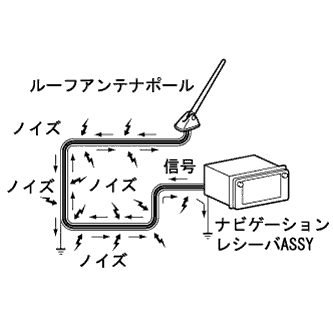 |
Antenna and Noise
The electrical signal received by the antenna is transmitted to the radio through the core wire of the coaxial cable. Noise waves other than radio waves enter this core wire and cause noise in the radio. To prevent noise from entering the radio, the core wire in the coaxial cable is covered with a mesh wire called a shield wire. This shield wire prevents noise from entering by sending the noise to ground.
Usable Discs
This player can only use music CDs, CD-Rs (CD-Recordable) and CD-RWs (CD-ReWritable) bearing the marks shown in the illustration.
Precautions for Disc Use
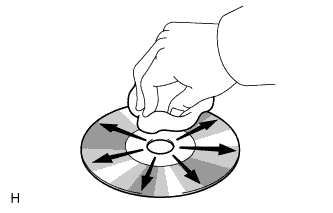 |
Cleaning
Clean dirt off discs by wiping lightly in a radial direction from the center outward with a soft, dry cloth such as a cleaning cloth for plastic eyeglass lenses.
Playable MP3 File Standards
| Supported Standards | MP3(MPEG1 LAYER3、MPEG2 LSF LAYER3) |
| Supported Sampling Frequencies |
|
| Supported Bit Rates |
|
| Supported Channel Modes | Stereo, joint stereo, dual channel, monaural |
Playable WMA File Standards
| Supported Standards | WMA Ver.7、8、9 |
| Supported Sampling Frequencies | 32、44.1、48(kHz) |
| Supported Bit Rates |
|
ID3 Tags / WMA Tags
MP3 files can contain attached text information called ID3 tags, which can store the song title, artist name, etc.
WMA files can contain attached text information called WMA tags, which can store the song title, artist name, etc.
Usable Media
The media that can be used for MP3/WMA playback are CD-ROM, CD-R (CD-Recordable) and CD-RW (CD-ReWritable) only.
Usable Media Formats
Usable Media Formats
| Disc Format | CD-ROM Mode1、CD-ROM XA Mode2 Form1 |
| File Format | ISO9660 Level 1, Level 2 (Romeo, Joliet) |
Standards and Restrictions
| Maximum Directory Levels | 8 levels |
| Maximum Number of Characters in Folder Name / File Name | 16 double-byte characters (32 characters when single-byte only) |
| Maximum Number of Folders | 192 (including root folder, folders without MP3/WMA files and empty folders) |
| Maximum Number of Files on Disc | 255 (including files other than MP3/WMA files) |
File Names
Only files with the MP3/WMA extension ".mp3" / ".wma" are recognized and played as MP3/WMA.
Save MP3/WMA files with the extension ".mp3" / ".wma".
Usable Discs
This player can only use MDs bearing the mark shown in the illustration.
The HDD navigation system uses AVC-LAN for communication between devices.
The master device of the AVC-LAN is the navigation receiver assembly.
The navigation receiver assembly contains a resistor necessary for communication transmission (60 to 80 Ω between terminals TX+ and TX-).
If a malfunction such as a short between communication lines, short to +B or short to GND occurs in the AVC-LAN circuit, communication is interrupted and the HDD navigation system does not operate normally.
The HDD navigation system uses CAN communication for data communication between the navigation receiver assembly and each ECU.
If a CAN communication DTC is output, repair the communication line malfunction first, then troubleshoot the HDD navigation system with data communication in a normal condition. (see )
)
Each CAN communication line has a specified length and routing, and temporary measures or repairs using bypass wiring, etc. cannot be performed. (see)
The HDD navigation system has a diagnosis function that can check the connection of and diagnose devices connected via AVC-LAN. (Inspection results are shown on the display)
Each device that makes up the AVC-LAN is assigned a 3-digit number (16-base notation) called a device code (physical address).
Each function (unit) inside an AVC-LAN device is assigned a 2-digit number (16-base notation) called a logical address.
The HDD navigation system has an adjustment function for the back guide monitor system, and adjustment using the diagnosis screen is necessary when back guide monitor system related parts have been removed and installed. (see)